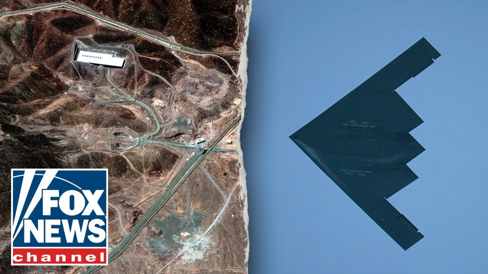

【伊朗主要核基地遭六枚“掩体粉碎者”炸弹袭击的新细节曝光】
Summary: The report details the U.S. strikes on Iran's nuclear sites, including six bunker buster bombs dropped on Fordo and 30 Tomahawk missiles targeting Natans and Isfahan, with insights on the B2 bombers and Ohio-class submarines involved.
摘要： 报道详细介绍了美国对伊朗核设施的打击，包括在福尔多投下的六枚掩体粉碎者炸弹和针对纳坦兹及伊斯法罕的30枚战斧导弹，并涉及参与行动的B2轰炸机和俄亥俄级潜艇。

⏱️ Estimated Reading Time: 8 min
📚 六级生词 📚 雅思生词 📚 托福生词 📚 专八生词 📚 SAT生词 📚 考研生词 📚 GRE生词 📚 高考生词
Meanwhile, let's get back to this country and the Washington the chief national security correspondent Jennifer Griffin is live for us at the Pentagon.
与此同时，让我们回到国内，华盛顿首席国家安全记者詹妮弗·格里芬正在五角大楼为我们进行现场报道。
Jennifer. Well, Trace, I think what's so extraordinary about tonight's strikes, not only all eyes were on Fordo, and for for the past week, we've been talking about the B2 bombers and the the massive ordinance penetrators.
詹妮弗。特雷斯，我认为今晚的打击行动之所以如此非同寻常，不仅因为所有人的目光都集中在福尔多，而且过去一周我们一直在讨论B2轰炸机和巨型钻地弹。
Those are the 30,000 pound GBU57 uh bunker buster bombs.
这些是重达3万磅的GBU57掩体粉碎者炸弹。
what we can report tonight after Sean Hannity spoke to the president, we learned that there were six uh massive ordinance penetrators dropped on Fordo and as the president wrote on Truth Social, that Fordo site is gone.
今晚在肖恩·汉尼提与总统交谈后，我们可以报道的是，有六枚巨型钻地弹投向了福尔多，正如总统在Truth Social上写道，福尔多基地已被摧毁。
My sources tell me that those um those bunker buster bombs would have been dropped through the air ventilation in ventilation shafts at Fordo.
我的消息来源告诉我，这些掩体粉碎者炸弹可能是通过福尔多的通风井投下的。
So most likely three bunker busters through each of those shafts.
因此，很可能每个通风井投下了三枚掩体粉碎者炸弹。
We had been focusing on the entrances.
我们此前一直关注的是入口。
There are two entrances to the Fordo site which is 300 feet underground.
福尔多基地有两个入口，位于地下300英尺处。
We've also reported that the MOP bomb uh can penetrate about 200 feet underground, but they work in pairs.
我们还报道过，MOP炸弹能穿透约200英尺深的地下，但它们成对使用。
The B2 bomber, which flew out of White White Air Force Base, they fly non-stop and are refueled along the way uh to this site at Foraux.
从怀特曼空军基地起飞的B2轰炸机不间断飞行，并在途中进行加油，前往福尔多的目标地点。
They drop one mop bomb, a 30,000 lb bomb that goes about 200 feet down.
它们投下一枚3万磅的MOP炸弹，可深入地下约200英尺。
There's soil that is then uh removed, exposed and then the second bomb which drops into a hole that is about has a radius of about 25 ft uh it goes into the same hole and can go even deeper.
土壤被移除并暴露后，第二枚炸弹落入半径约25英尺的同一弹坑，可钻得更深。
So Ford we understand is gone.
因此，我们认为福尔多已被摧毁。
That is significant because that was the main uh nuclear enrichment site and it was deeply fortified in that mountain.
这非常重要，因为那是主要的核浓缩基地，且深藏于山中并高度加固。
But then there are the two other sites you have Natans which had three underground enrichment facilities.
但还有另外两个地点，纳坦兹拥有三个地下浓缩设施。
Uh those three we understand that 30 Tomahawk missiles were fired from uh US submarines about 400 miles away from these sites, the sites at Isvahan and Natans.
据了解，30枚战斧导弹是从距离伊斯法罕和纳坦兹约400英里的美国潜艇上发射的。
Those US submarines were most likely Ohio class converted uh guided missile subs.
这些美国潜艇很可能是改装过的俄亥俄级导弹潜艇。
Um though it most likely the USS uh Georgia or Florida were involved in those strikes.
很可能是佐治亚号或佛罗里达号潜艇参与了这些打击。
What I'm being told though is that Isvahan, Isvahan is an even harder target than Forau.
但我被告知，伊斯法罕是一个比福尔多更难打击的目标。
hadn't talked about it as much this week because all the focus was on the B2s and the mop bombs and fordo but Isvahan is where the uranium hexafflloride is where the centrifuges are are made and they and my understanding is there is a tunnel into the mountain there and it is much much deeper than at Ford and so we will have to wait and see the bomb damage assessment at that site to see how uh whether it was completely destroyed I'm told from very very knowledgeable sources that that was most likely the hardest sight.
本周讨论较少是因为焦点集中在B2轰炸机、MOP炸弹和福尔多上，但伊斯法罕是六氟化铀和离心机的制造地，据我所知那里有一条通往山体的隧道，且比福尔多深得多，因此我们需要等待炸弹毁伤评估以确认是否被完全摧毁。消息灵通人士称那可能是最难打击的目标。
So, we'll have to see.
因此，我们还需观望。
I know we're still getting new information coming in here, Jennifer, but just for kind of clarification here, we have been told or we're we've been kind of reporting that that the B2s went in and they went into Fordo and may have dropped as many as six of the bunker busters and there were as many as 30 tomahawks fired at Natans and East Fahan.
詹妮弗，我知道我们仍在获取新信息，但为了澄清，我们此前报道称B2轰炸机进入福尔多并可能投下多达六枚掩体粉碎者炸弹，同时有30枚战斧导弹射向纳坦兹和伊斯法罕。
And I'm wondering, do we know, have we ruled out the possibility of any bunker busters being used on Isvahan and on Natans?
我想知道，我们是否排除了在伊斯法罕和纳坦兹使用掩体粉碎者炸弹的可能性？
Um, I'm told that the bunker busters were used at Fordo and that it was the Tomahawks that targeted Natans and Isvahan.
据我所知，掩体粉碎者炸弹用于福尔多，而战斧导弹的目标是纳坦兹和伊斯法罕。
U, so at this point in time, you would have had at least three B2 uh bombers there above Fora.
因此，此时至少有三架B2轰炸机在福尔多上空。
Um, again, when we woke up this morning, all eyes were on the reports and the the sightings, the the radar trackers, uh, the, um, the flight trackers who saw that there were those six B2 bombers flying towards Guam.
今早醒来时，所有人的注意力都集中在报告和目击事件上，雷达追踪器和航班追踪器发现六架B2轰炸机飞向关岛。
And now that's a, if you were to fly from Whiteitman Air Force Base in Missouri all the way to Iran, let's say, that's a 30 30 hour straight flight.
如果从密苏里州的怀特曼空军基地直飞伊朗，大约需要30小时。
So those bombers could not possibly have been involved in this strike.
因此这些轰炸机不可能参与此次打击。
That's when we look at what would have been flying east.
于是我们关注向东飞行的飞机。
Uh clearly some B2 bombers from Whiteitmen flew east and that's why we saw this week about 30 air refuelers that were positioned in Europe and along the way and throughout the Middle East because they would have been required to create an air refueling bridge to get those B2s.
显然怀特曼的一些B2轰炸机向东飞行，因此本周我们看到约30架加油机部署在欧洲、沿途和中东，以建立空中加油桥梁支持这些B2。
It's a 15-hour uh flight if you go east from Whiteitman to uh to Fordo.
从怀特曼向东飞往福尔多约需15小时。
And so those bombers would have flown east and they would have been refueled along the way and they would be on their way back home to Whiteitman as we speak.
这些轰炸机向东飞行并在途中加油，现在可能正在返回怀特曼的途中。
Trace Jennifer Griffin, we'll get back to you.
特雷斯，詹妮弗·格里芬，稍后再联系你。
Jennifer, thank you.
詹妮弗，谢谢。
Hey, it's Will Kaine.
嘿，我是威尔·凯恩。
Click here to subscribe to the Fox News Channel on YouTube.
点击此处订阅YouTube上的福克斯新闻频道。
It's the best way to get our latest interviews and highlights.
这是获取我们最新访谈和精彩内容的最佳方式。
and click to subscribe to the Will Kane podcast for full episodes right
点击订阅威尔·凯恩播客获取完整剧集。